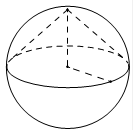

Авторский разбор и аудит предварительны; внешней экспертизы нет.
Модель автора: claude-opus-5-5 (opus; effort=low); в основных частотах: True ·
Впишите правильный ответ.
| Около конуса описана сфера (сфера содержит окружность основания конуса и его вершину). Центр сферы находится в центре основания конуса. Образующая конуса равна Найдите радиус сферы. |  |
КЭС: 7.4 Тела и поверхности вращения
9
| ID / вход | Действие | Результат | Локальные KC |
|---|---|---|---|
| s1 · condition | Из того, что центр сферы совпадает с центром основания и сфера проходит через окружность основания и вершину, выразить радиус основания и высоту конуса через радиус сферы R | радиус основания r = R, высота h = R | kc1 |
| s2 · s1, condition | Выразить образующую через радиус основания и высоту по теореме Пифагора в осевом прямоугольном треугольнике и приравнять данному значению | l = √(R²+R²) = R√2 = 9√2, откуда R = 9 | kc2 |
[
{
"id": "m1",
"name": "Выражение элементов конуса через радиус сферы и теорема Пифагора",
"step_ids": [
"s1",
"s2"
]
}
]Вход: тело вращения, вершины/окружности которого лежат на сфере, и положение центра сферы. Операция: используя равенство расстояний от центра до точек сферы, выразить линейные элементы тела (радиус основания, высоту) через радиус сферы. Граница: требуется заданное положение центра.
{
"local_kc_id": "kc1",
"status": "new_candidate",
"catalog_kc_id": null,
"evidence": [
{
"ref": "step:s1:action",
"quote": "Из того, что центр сферы совпадает с центром основания и сфера проходит через окружность основания и вершину, выразить радиус основания и высоту конуса через радиус сферы R"
},
{
"ref": "step:s1:result",
"quote": "радиус основания r = R, высота h = R"
},
{
"ref": "image:assets/332da88a888c22b8c6c051a8.png",
"region_description": "Сфера с пунктирным конусом: вершина в верхней точке сферы, центр основания (точка) в центре сферы, пунктирные отрезки от центра к вершине и к точке окружности основания на экваторе"
}
],
"context_refs": [
"condition"
],
"alternatives_checked": [
{
"catalog_kc_id": "literal_fe8297102f74",
"reason": "Серединный перпендикуляр к отрезку; здесь используется равенство расстояний от центра сферы до её точек, а не ГМТ к отрезку"
},
{
"catalog_kc_id": "literal_1c069a073c08",
"reason": "Связь радиуса, высоты и образующей конуса; не описывает выражение элементов конуса через радиус описанной сферы"
}
],
"rationale": "Операция: по положению центра сферы (центр основания) и принадлежности окружности основания и вершины сфере получить r=R и h=R. В каталоге нет узла о связи элементов тела вращения с радиусом описанной сферы.",
"proposal": {
"definition": "При заданном положении центра описанной сферы выразить радиус основания и высоту тела вращения через радиус сферы как расстояния от центра до точек сферы (окружности основания, вершины)."
},
"blocking": false,
"issue_ids": []
}Вход: два из трёх элементов прямого кругового конуса (или их выражения). Операция: применить теорему Пифагора в прямоугольном треугольнике высота–радиус–образующая и найти неизвестный элемент. Граница: прямой круговой конус.
{
"local_kc_id": "kc2",
"status": "match",
"catalog_kc_id": "literal_1c069a073c08",
"evidence": [
{
"ref": "step:s2:action",
"quote": "Выразить образующую через радиус основания и высоту по теореме Пифагора в осевом прямоугольном треугольнике"
},
{
"ref": "step:s2:result",
"quote": "l = √(R²+R²) = R√2"
}
],
"context_refs": [
"step:s1:result",
"condition"
],
"alternatives_checked": [
{
"catalog_kc_id": "pythagoras",
"reason": "Общий узел теоремы Пифагора; literal_1c069a073c08 точнее описывает именно треугольник радиус–высота–образующая прямого конуса"
},
{
"catalog_kc_id": "linear_equation",
"reason": "Решение R√2=9√2 — тривиальный компонент шага, не основное действие кандидата"
}
],
"rationale": "Наблюдается связь r, h и l прямого конуса через прямоугольный треугольник осевого сечения, что совпадает с определением literal_1c069a073c08. Последующее нахождение R=9 — элементарное линейное уравнение, не размеченное отдельно.",
"proposal": null,
"blocking": false,
"issue_ids": []
}[]
[]
{
"author_path": "data/annotation/runs/2026-11-09-fipi-team-bogdan108-next-100/raw/author/DB4Ae5.json",
"auditor_path": "data/annotation/runs/2026-11-09-fipi-team-bogdan108-next-100/raw/auditor/DB4Ae5.json",
"accepted_after_review": null
}